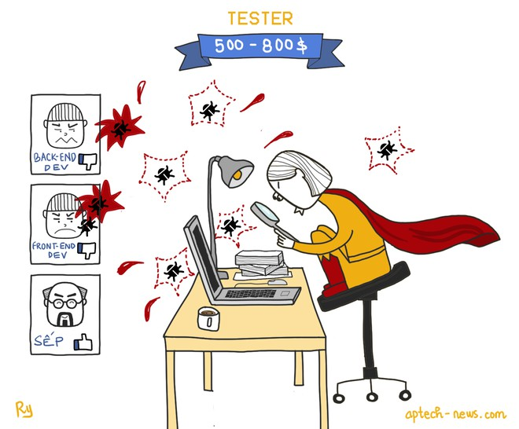

CƠ HỘI NGHỀ NGHIỆP DÀNH CHO SINH VIÊN CNTT

|
Giám đốc CNTTVới kinh nghiệm 10-20 năm, học viên ngành IT có thể trở thành CIO - Giám đốc CNTT, sở hữu mức lương 3000-5000 USD. CIO có nhiệm vụ đề ra các chiến lược về CNTT cho toàn công ty cũng như đi đầu trong việc tìm kiếm khách hàng mới. |
Trưởng phòng CNTTỞ mức kinh nghiệm thấp hơn 5-10 năm, sinh viên IT có thể trở thành IT manager- Trưởng phòng CNTT và sở hữu mức lương 1000-2000 USD. Trưởng phòng CNTT là người có trách nhiệm xây dựng các dự án phần mềm , quản lý nhân sự, phối hợp với giám đốc kỹ thuật để phát triển công nghệ. |
Giám đốc kỹ thuậtHọc viên ngành IT có thể trở thành Technical leader - Giám đốc kỹ thuật khi có từ 5 đến 10 năm kinh nghiệm. Giám đốc kỹ thuật sẽ chịu trách nhiệm nghiên cứu và triển khai công nghệ cho sản phẩm của công ty như .NET hoặc Java. Mức lương cho vị trí này dao động trong khoảng 1000-2000 USD. |

|
Trưởng nhóm lập trìnhTeam leader - Trưởng nhóm lập trình là công việc thường thấy của dân IT khi có 3-5 năm kinh nghiệm. Vị trí này chịu trách nhiệm quản lý nhóm lập trình viên hay tester. Ngoài kỹ năng code , team leader còn phải biết phân bổ, quản lý công việc và quy trình cho cả nhóm. Mức lương cho vị trí này khoàng 800- 1000 USD |
Chuyên gia phân tích dữ liệuNgoài việc trở thành trưởng nhóm lập trình, sinh viên IT có thể đảm nhiệm vị trí data analyst - chuyên gia phân tích dữ liệu, với mức lương 800-1000 USD. Công việc chính của vị tri này là tổng hợp dữ liệu, phân tích và đánh giá dữ liệu một cách nhanh chóng và chỉnh xác. |

|
Lập trình viên về webWeb developer - lập trình viên về web là vị trí của các sinh viên IT khi mới ra trường với kinh nghiệm 1 - 3 năm. Họ là người thiết kế ra những trang web đep . nhanh , chính xác mà tất cả chúng ta sử dụng hàng ngày. OT ( Overtime ) hay đi on-site (làm việc nước ngoài ) là chuyện thường ngày đối với một lập trình viên về web. |
Lập trình viên ứng dụng di độngMobile developer - Lập trình viên ứng dụng di động là công việc dành cho những ai yêu thích, đam mê điện thoại và công nghệ. Với kinh nghiệm 1 - 3 năm, lập trình viên ứng dụng di động có thể sở hữu mức lương 600 - 800 USD và xây dựng thành thạo ứng dụng trên các nền tảng mobile như IOS, Android hay Windows Phone... Cái tên điển hình phải kể đến trong lĩnh vực này là Nguyễn Hà Đông với Flappy Bird |

|
Quản lý hệ thống mạng máy tínhSinh viên IT cũng có thể trở thành quản lý hệ thống mạng máy tính, khi có kinh nghiệm 1 - 5 năm. Với mức lương 500 - 800 USD, quản lý mạng máy tính sẽ phải chịu trách nhiệm xây dựng, duy trì và bảo mật cho hệ thống mạng của các công ty. Đây cũng là "chiến binh" chống lại mọi cuộc tấn công bất kể ngày đêm. |

|
Lập trình giao diện người dùngFront-end Developer - Lập trình giao diện người dùng yêu cầu sử dụng thành thạo photoshop, hiểu trải nghiệm người dùng, có thể biến hóa với các framework Javascript. Vị trí này luôn được săn đón với mức lương 600-800 USD. Để làm được điều này, sinh viên cần có từ 1 - 3 năm kinh nghiệm. |
|  |
Kiểm thử phần mềmTester - Kiểm thử phần mềm là người kiểm tra chất lượng phần mềm do các lập trình viên tạo ra, tìm ra lỗi phần mềm và chuyển cho developer sửa lỗi. Điểu thú vị khi trở thành một tester chính là khả năng "nhìn thấy những điều người khác không nhìn thấy" và là người đầu tiên trải nghiệm những sản phẩm mới. Kinh nghiệm cần có cho vị trí này khoảng 1 - 3 năm. Mức lương cho một tester thường dao động từ 500 đến 800 USD. |
Design by (Phan Dinh Duy)